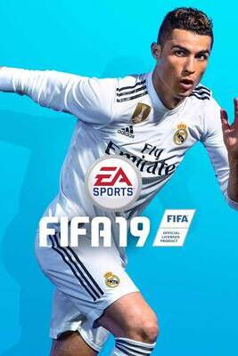
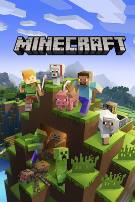
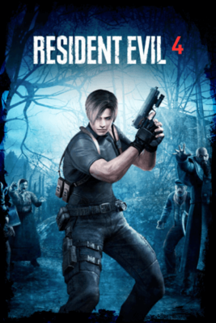
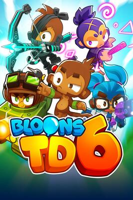

FIFA 19 é um jogo eletrônico de simulação de futebol desenvolvido pela EA Vancouver e lançado pela Electronic Arts em 28 de setembro de 2018 para PlayStation 3 , PlayStation 4 , Xbox 360 , Xbox One , Nintendo Switch e Microsoft Windows . É o 26º título da série FIFA .
Assim como no FIFA 18 , Cristiano Ronaldo foi o atleta da capa da edição regular; no entanto, após sua transferência inesperada do Real Madrid para a Juventus , uma nova arte de capa foi lançada. Ele também apareceu com Neymar na capa da edição Champions. Em outubro de 2018, uma mulher afirmou que Ronaldo a havia estuprado em um quarto de hotel em Las Vegas em 2009 e posteriormente entrou com um processo em um tribunal do Condado de Clark, Nevada, alegando que Ronaldo e sua equipe se aproveitaram de seu frágil estado emocional e a coagiram a assinar um acordo de confidencialidade em troca de US$ 375.000. Como resultado, em fevereiro de 2019, a EA substituiu Ronaldo como estrela da capa por Neymar, Kevin De Bruyne e Paulo Dybala .

Minecraft é um jogo eletrônico sandbox de sobrevivência de 2011 desenvolvido e publicado pela desenvolvedora sueca Mojang Studios. Originalmente criado por Markus "Notch" Persson usando a linguagem de programação Java, a primeira versão alfa pública foi lançada em 17 de maio de 2009. O jogo foi desenvolvido continuamente a partir de então, recebendo um lançamento completo em 18 de novembro de 2011. Posteriormente, Persson deixou a Mojang e cedeu o controle do desenvolvimento a Jens "Jeb" Bergensten. Nos anos desde o seu lançamento, o jogo foi portado para diversas plataformas, incluindo smartphones, tablets e diversos consoles de jogos eletrônicos. Em 2014, a Mojang e a propriedade intelectual de Minecraft foram compradas pela Microsoft por US$ 2.5 bilhões.

Resident Evil 4 é um jogo eletrônico de survival horror desenvolvido e publicado pela Capcom para o GameCube em 2005. É o sexto jogo principal da franquia Resident Evil. Os jogadores controlam o agente especial Leon S. Kennedy em uma missão para resgatar Ashley Graham, filha do presidente dos Estados Unidos, que foi sequestrada por um culto religioso na zona rural da Espanha. Leon enfrenta hordas de inimigos infectados por um parasita que controla mentes e reencontra a espiã e mercenária Ada Wong. Diferentemente dos ângulos de câmera fixos e da jogabilidade mais lenta dos jogos anteriores da série, Resident Evil 4 apresenta um sistema de câmera dinâmico e uma jogabilidade focada na ação.

Bloons TD 6 é um jogo estilo tower defense (em português, "defesa de torres") de 2018 desenvolvido e publicado por Ninja Kiwi. É o sexto lançamento da série Bloons Tower Defense e foi lançado em 13 de junho de 2018 para iOS e Android.[1] Foi posteriormente lançado para Microsoft Windows em 2018 e macOS em março de 2020 via Steam. Em fevereiro de 2022, Bloons TD 6+ foi lançado para Apple Arcade.